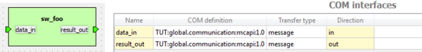

COM interfaces editor
This is Kactus extension

COM interface means
that component supports an optional "high-level" communication
mechanism, such as MCAPI. Purpose is to increase portability by
abstacting the details of communication. COM interfaces are
connected together in system view of the Kactus. Usually,
these interfaces a part of a SW component, but some HW
components can support them also. COM interfaces makes only
loose coupling between SW components, and consequently the
receiver can be mapped on different CPU than sender. COM
interfaces are meant for communication between application
modules, whereas API interfaces are mainly between application
and platform (OS, drivers) and inside the platform.
Each interface has a mandatory name and direction
(in, out, inout). Optional COM definition is an XML
document that captures the interface properties, similarly to
bus interfaces in regular HW components. Note that this
information is just shown here and can be edited on interface
editor. Optional transfer type denotes what kind of data
is transmitted through the interface. The allowed values depend
on the selected COM definition.
For example, a SW component could have an input COM interface
'data_in' and output called 'result_out'. Then depending of how
the channels are conencted in system design, the imput data can
come from, say, UART or CPU. Similarly, the result can be
directed to, say, memory or VGA. Here both interfaces correspond
to MCAPI endpoints and transmit 'MCAPI messages'.
